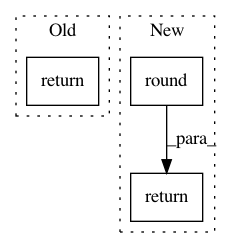

e3c8552f3cad8b5ab0128a6eb27e3190506fe9d8,src/sdk/pynni/nni/parameter_expressions.py,,quniform,#Any#Any#Any#Any#,53
Before Change
random_state: an object of numpy.random.RandomState
"""
assert high > low, "Upper bound must be larger than lower bound"
return randint(np.floor((high-low)/q)+1, random_state) * q + low
def loguniform(low, high, random_state):
"""
After Change
q: sample step
random_state: an object of numpy.random.RandomState
"""
return np.clip(np.round(uniform(low, high, random_state) / q) * q, low, high)
def loguniform(low, high, random_state):
"""
In pattern: SUPERPATTERN
Frequency: 3
Non-data size: 3
Instances
Project Name: microsoft/nni
Commit Name: e3c8552f3cad8b5ab0128a6eb27e3190506fe9d8
Time: 2019-08-04
Author: suiguoxin@gmail.com
File Name: src/sdk/pynni/nni/parameter_expressions.py
Class Name:
Method Name: quniform
Project Name: microsoft/nni
Commit Name: afb4e78c5c9c4782482777fd8587c636711ab2e5
Time: 2019-08-04
Author: suiguoxin@gmail.com
File Name: src/sdk/pynni/nni/gridsearch_tuner/gridsearch_tuner.py
Class Name: GridSearchTuner
Method Name: _parse_quniform
Project Name: NifTK/NiftyNet
Commit Name: 69e3d6d36be88b25b9ba833724129f330421bfdc
Time: 2017-09-06
Author: wenqi.li@ucl.ac.uk
File Name: niftynet/engine/sampler_grid.py
Class Name:
Method Name: _enumerate_step_points